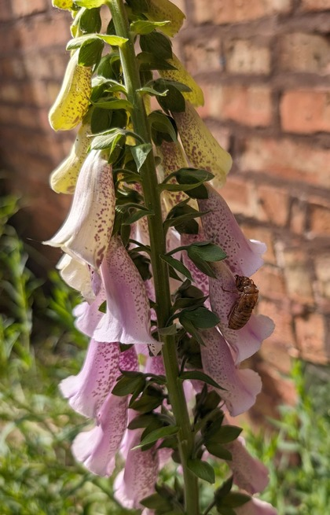

I am a hobbyist gardener,I grow some herbs, vegetables, berries, and decorative plants but the plants I find the most interesting are the toxic ones. Most toxic plants you will typically find for sale exist in the decorative category but some are grown for industrial purposes or for medicinal/historic medicinal purposes. On this page you will find a few examples of poisonous plants that I personally grow along with a little bit about their toxic properties and potential uses.
-
Foxglove

Foxglove is one of my favorite flowers and it is the pant that got me interested in toxic plants in general
Foxglove contains the cardiac glycoside digoxin which is still used today to treat heart failure and helps to control heart rate in atrial fibrillation. Digoxin increases the strength of heart contractions and slows heart rate. In a toxic dose one can expect gastrointestinal distress, visual disturbances, and potentially fatal cardiac arrhythmias.